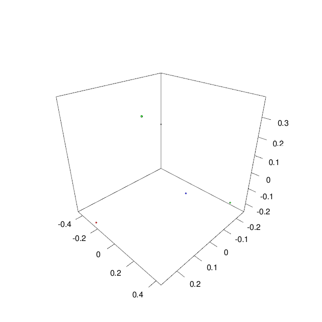

Your browser does not support the HTML5 canvas element.
You must enable Javascript to view this page properly.
Drag mouse to rotate model. Use mouse wheel or middle button to zoom it.
Object written from rgl 0.93.986 by writeWebGL.